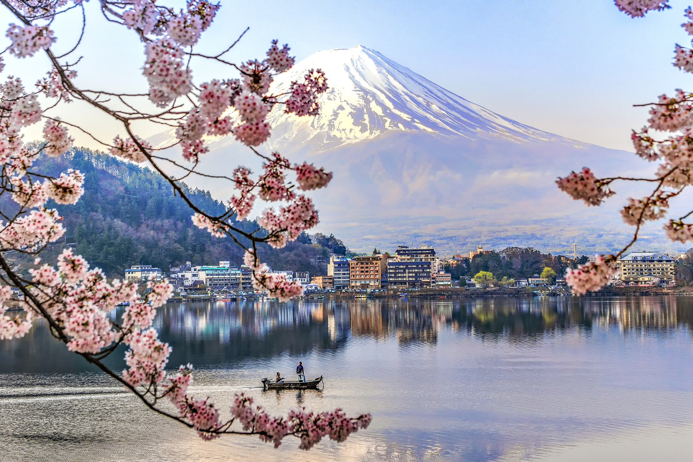
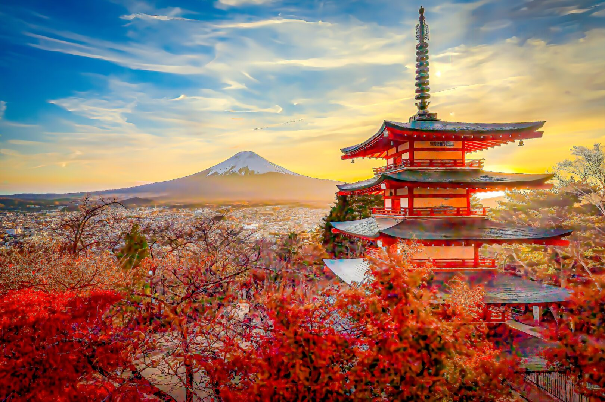
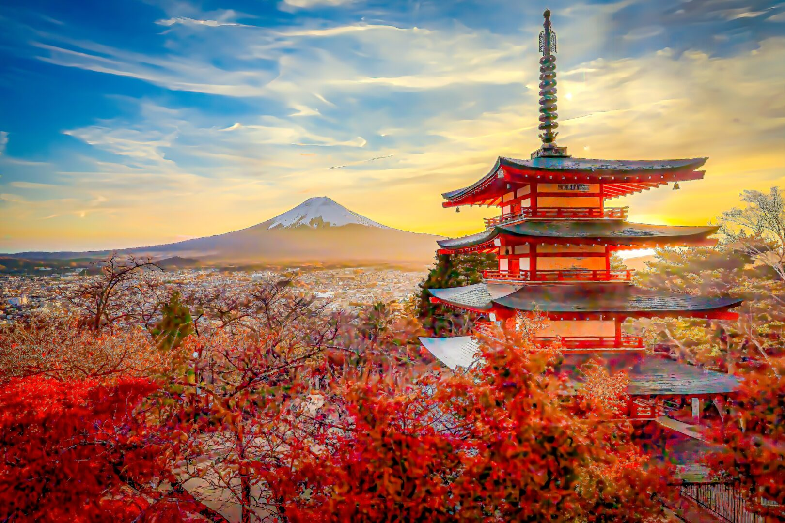
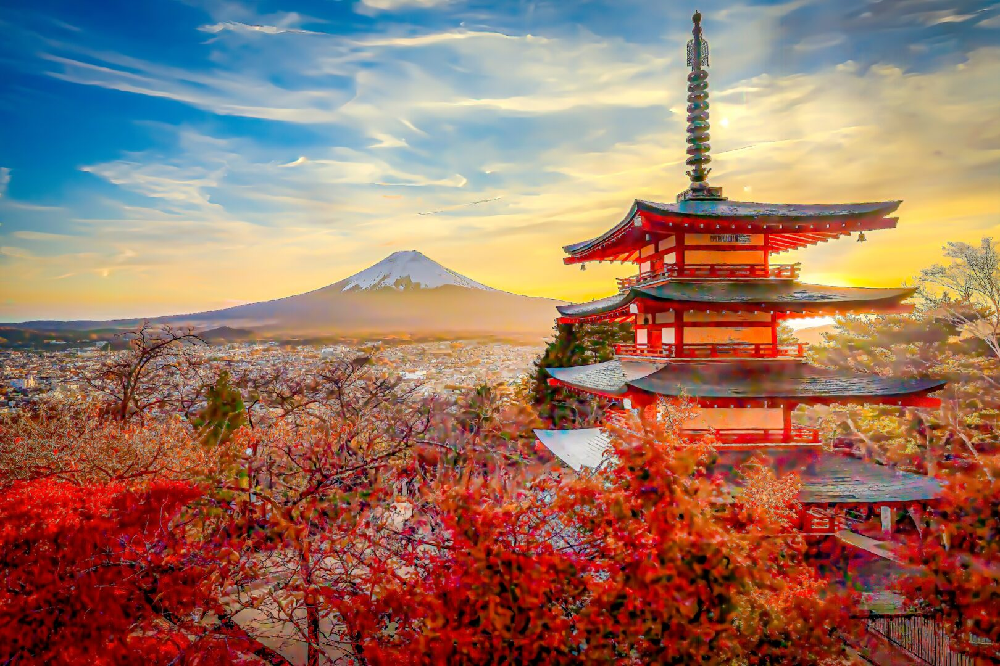

Paysages du Japon

Créateur :
DoctorEgg
Pixabay.com/
Source :
blog.action-sejours.com
Source :
trancedirecte.com

Source :
tcsvoyages.ch

 Source : blog.action-sejours.com
Source : trancedirecte.com

Source : tcsvoyages.ch
Source : blog.action-sejours.com
Source : trancedirecte.com

Source : tcsvoyages.ch